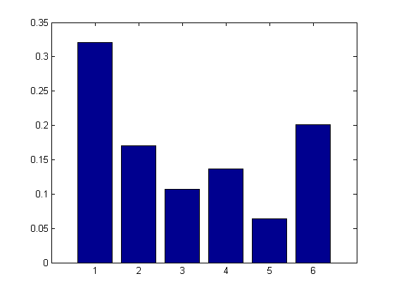
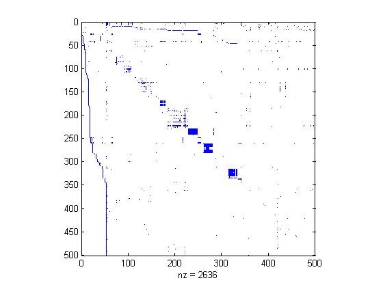
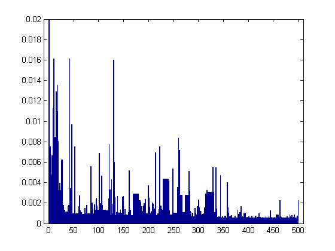

Contents
6 node web example
i = [ 2 6 3 4 4 5 6 1 1];
j = [ 1 1 2 2 3 3 3 4 6];
n = 6;
G = sparse(i,j,1,n,n);
c = sum(G,1);
k = find(c~=0);
D = sparse(k,k,1./c(k),n,n);
e = ones(n,1);
I = speye(n,n);
p = 0.85;
pi = normalize((I - p*G*D)\e);
fprintf('exact pi\n'); disp(pi(:)')
figure; bar(pi);printPmtkFigure('smallwebPagerank');
fprintf('pi over time using power method\n');
format compact
pi = e/n;
z = ((1-p)*(c~=0) + (c==0))/n;
A = p*G*D + e*z;
for i=1:10
pi = normalize(A*pi);
disp(pi')
end
[pi,cnt] = pagerankpow(G);
fprintf('matrix free power method\n'); disp(pi(:)')
exact pi
Columns 1 through 2
0.321016940895182 0.170543038221924
Columns 3 through 4
0.106591629585789 0.136792591301763
Columns 5 through 6
0.064311800057445 0.200743999937897
pi over time using power method
Columns 1 through 2
0.331944444444444 0.119444444444444
Columns 3 through 4
0.119444444444444 0.166666666666667
Columns 5 through 6
0.095833333333333 0.166666666666667
Columns 1 through 2
0.321909722222222 0.179652777777778
Columns 3 through 4
0.089340277777778 0.123182870370370
Columns 5 through 6
0.072418981481481 0.213495370370370
Columns 1 through 2
0.321435860339506 0.172070987654321
Columns 3 through 4
0.111611786265432 0.136924864969136
Columns 5 through 6
0.060572434413580 0.197384066358025
Columns 1 through 2
0.317743686503344 0.170191335519547
Columns 3 through 4
0.106711264628344 0.138334604070216
Columns 5 through 6
0.065204434317130 0.201814674961420
Columns 1 through 2
0.323364182038484 0.169278361625514
Columns 3 through 4
0.106568612457401 0.136803470768765
Columns 5 through 6
0.064472153172957 0.199513219936878
Columns 1 through 2
0.320002742132633 0.171563332399191
Columns 3 through 4
0.106076858723679 0.136271298919943
Columns 5 through 6
0.064327995229099 0.201757772595455
Columns 1 through 2
0.321437843445544 0.170114298063825
Columns 3 through 4
0.107027548927112 0.137082658898821
Columns 5 through 6
0.064168242629165 0.200169408035534
Columns 1 through 2
0.320754757933333 0.170701584503488
Columns 3 through 4
0.106389077716257 0.136713549912272
Columns 5 through 6
0.064414973235147 0.201026056699503
Columns 1 through 2
0.321204120161655 0.170446226663312
Columns 3 through 4
0.106673627955628 0.136817199975234
Columns 5 through 6
0.064269026561252 0.200589798682919
Columns 1 through 2
0.320900727622274 0.170616529831547
Columns 3 through 4
0.106544425094752 0.136768619682180
Columns 5 through 6
0.064328973350272 0.200840724418975
matrix free power method
Columns 1 through 2
0.320981356688452 0.170568804091103
Columns 3 through 4
0.106570122461334 0.136780623108859
Columns 5 through 6
0.064319788911622 0.200779304738628

Now run it on the Harvard web site
load harvard500
figure;spy(G);
printPmtkFigure('harvard500spy');
tic
[pi,cnt] = pagerankpow(G);
toc
figure;bar(pi);set(gca,'xlim',[-10 510]);set(gca,'ylim',[0 0.02])
printPmtkFigure('harvard500pagerank');
[pi,ndx] = sort(pi, 'descend');
celldisp(U(ndx(1:3)))
Elapsed time is 0.047541 seconds.
ans{1} =
http://www.harvard.edu
ans{2} =
http://www.hbs.edu
ans{3} =
http://search.harvard.edu:8765/custom/query.html
 